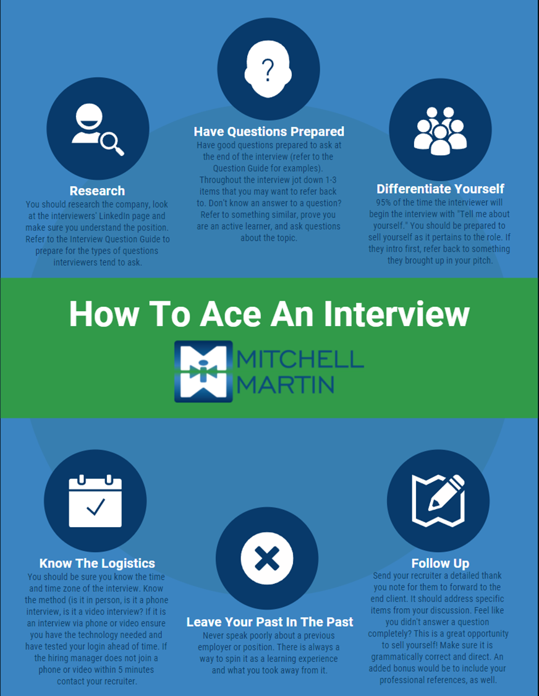
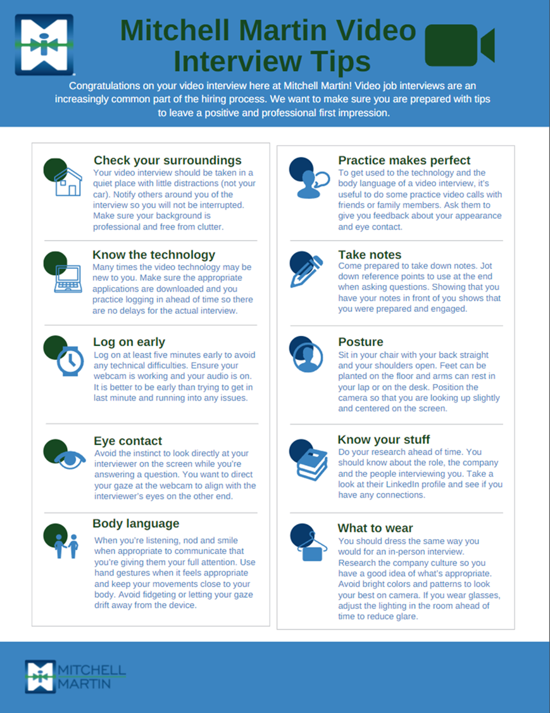
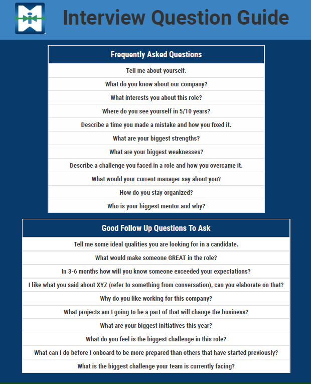

Owner: Sales
Qualification
Sales qualifies the requirement by phone and includes recruiting or sales leadership when needed.
For new salespeople or new clients, leader involvement and approval are mandatory.
Recruiter Encyclopedia
This is a modern, interactive version of the Recruiter Toolkit.
SOP process
Follow the handoff from qualified requirement through assignment, submission, interview, close, onboarding, and retention.
Sales qualifies the requirement by phone and includes recruiting or sales leadership when needed.
Outreach
Conversations with candidates
Use this flow to prepare with the salesperson, run stronger candidate discovery calls, and explain benefits or salary model details clearly.
Candidate ownership
All candidates and jobs must be tracked in JobDiva so ownership rules can be administered correctly. True ownership comes from meaningful candidate qualification, updated records, and documented activity.
Immigration, 3rd parties and ICs
Use this section when working with H1B transfers, third-party corporations, IC corporations, or subcontractor identity validation.
Resume formatting
Before submission, remove personal information, follow the requested MMI branding direction, and make the resume clean enough for sales to send directly to the client.
Prep & debrief
Use the conversation to sell the role, confirm fit, surface concerns, and set the next follow-up before the call ends.
Talk through who they are interviewing with, client must-haves, related experience, logistics, next steps, and a scheduled debrief follow-up time.



Offer letter intake
Switch candidate type to reveal the fields recruiters need before generating an official offer letter.
Template 1
Congratulation on your offer with __________ Tentative Start: 2-3 weeks once background check clears Location: Duration: Rate: Could you please share the following details to generate the official offer letter? Thank you. Your Legal Full Name: Your Mailing Address: Mobile Phone: Social Security Number: Visa Status: Visa Expiration: Date of Birth: 2 Professional Supervisory References: Name: Title: Company: Email: Phone:
Template 2
Congratulation on your offer with __________ Tentative Start: 2-3 weeks once background check clears Location: Duration: Rate: Could you please share the following details to generate the official offer letter? Thank you. Candidate's Legal Full Name: Candidate's Mailing Address: Candidate's Mobile Phone: Social Security Number: Visa Status: Visa Expiration: Date of Birth: Name of C2C: C2C EIN Number: Signer's Name: Signer's Email Address: Company's Address: 2 Professional Supervisory References: Name: Title: Company: Email: Phone:
Template 3
Your Legal Full Name: Your Mailing Address: Mobile Phone: Email Address: Start Date:
Deal start
Start with the deal type, then follow the required JobDiva path for contracts, direct placements, extensions/rate changes, or contract-to-hire conversions.
Contract Deal
Recruiting confirms candidate information and starts onboarding; sales completes the bill side, then recruiting completes the pay side.
JobDiva documentation
Use these cards to log the key recruiting actions in JobDiva: submittals, interviews, prep calls, debrief close calls, references, and retention connects.
Reference library
A consolidated list of every uploaded source document that informed this interactive recruiter toolkit.